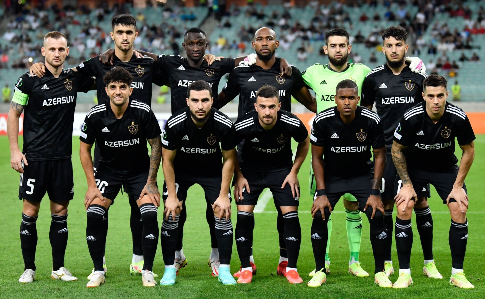

Qurban Qurbanov
Qurban Qurbanov Azerbaycan milli komandasinin Qarabag pesekar futbol komandasinin bas mesqcisidir.
Andrey Lunev
Andrey Lunev Azerbaycan Qarabag futbol klubun 1 nomre qapicisidir ve oyuncunun deyeri 1.3 million.

Bedavi Huseynov
Bedavi Huseynov Qarabag futbol klubunun orta mudafiecisidir ve oyuncunun deyeri 320000.

Bahlul Mustafazada
Bahlul Mustafazada Qarabag futbol komandasinin orta mudafiecisidir ve oyuncunun deyeri 520000.

Kevin Medina
Kevin Medina Qarabag komandasinin orta mudafiecisidir ve oyuncu deyeri 485000
Tural Bayramov
Tural Bayramov milli Qarabag futbol klubunun sag mudafiecisidir ve oyuncu deyeri 535000.

Elvin Cafarquliyev
Elvin Cafarquliyev Qarabag futbol komandasinin sol mudafiecisidir ve oyuncu deyeri 800000.
Julio Romao
Julio Romao Qarabag futbol klubunun sag yarim-mudafiecisidir ve oyuncunun deyeri 485000.

Yasin Benzia
Yasin Benzia Qarabag futbol klubunun orta mudafiecisidir ve oyuncunun deyeri 1.1 million.

Abdullah Zubir
Abdullah Zubir Qarabag futbol klubunun sol hucumcusudur ve oyuncu deyeri 775000.

Juninho Vieria
Juninho Vieria Qarabag futbol klubunun orta hucumsudur ve oyuncu deyeri 620000.

Leandra Andrade
Leandra Andrade Qarabag futbol klubunun sag hucum ve oyuncu deyeri 825000.